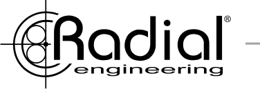
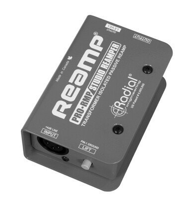
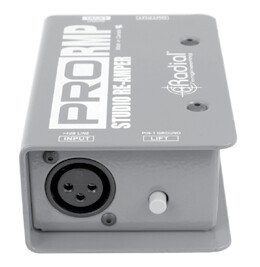
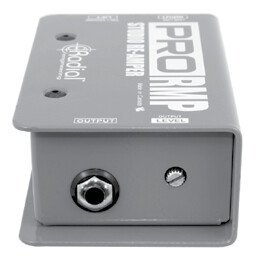
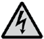
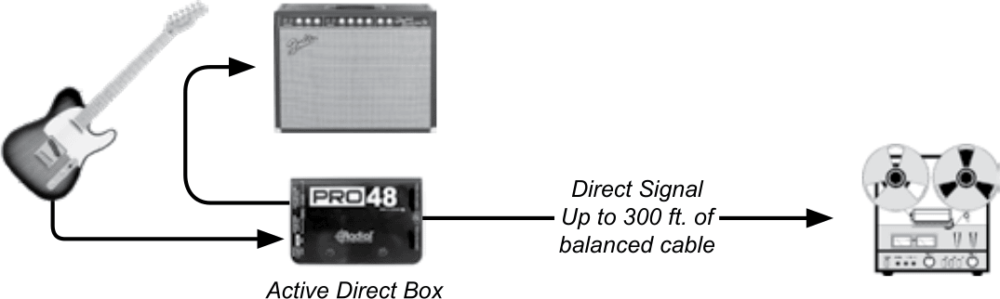
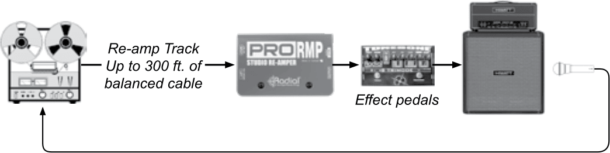

ProRMP Reamper Owner’s Manual

Congratulations
On your purchase of the Radial ProRMP. Radial products are easy to use and this short manual contains all the information you need to start using your ProRMP right away. For more information on the ProRMP, and other Radial products, visit our website, www.radialeng.com.
Overview
The Radial ProRMP is a passive re-amplifying device that has been developed to explore new musical sounds and spur on the creative process through alternative recording techniques. The ProRMP allows pre-recorded instrument tracks to be sent through effect pedals and guitar amplifiers. You will find the ProRMP fun and easy to use. Should you have any questions regarding its functions we invite you to contact us at info@radialeng.com. Now get ready to re-amp that acoustic track into your Marshall double stack!
Features and Functions

1 2 3- InputBalanced low-Z XLR input jack, +4dB line-level, 1600Ω. The XLR female connector is wired with Pin 2 hot following the AES standard.
- Ground LiftDisconnects pin 1 at the XLR input and interrupts the ground path between the recorder and the ProRMP ¼" output. The ProRMP must be connected to a properly grounded amp to use the LIFT switch.
- Bookend Design14 gauge steel outer shell creates protected zone around connectors and switches.

4 5 6 7- I-Beam ConstructionWelded internal enclosure features ultra rigid I-beam construction to protect the PC board.
- OutputHi-Z ¼" output connects to guitar amp or effect pedal input. This output provides the primary ground path for the ProRMP. This output should be connected to a properly grounded amplifier.
- LevelThe output LEVEL control sets the level going to the guitar amplifier. This recessed control is adjusted using a guitar pick as a screwdriver.
- Full-Bottom No-Slip PadThis provides mechanical isolation to reduce slipping and electrical isolation from amplifier frames and handles.
Important Notice

Important Notice!The Radial ProRMP is a passive re-amper specifically designed for use with amplifiers with proper electrical safety grounds approved by nationally recognized electrical authorities such as UL in the United States, CSA in Canada and other similar bodies in countries around the world.
It is further understood that due to the unpredictable nature of connecting any number of different amplifiers and pedals together, using the ProRMP can pose a potential for electric shock, and as such, the user is completely responsible for any and all consequences as these are beyond our control.
This means that you are completely responsible to ensure the safe and proper use of the ProRMP and to clearly understand that using it confirms you have taken full responsibility. If you are not 100% sure of your actions, please consult a qualified technician for advice before using this device or connecting any of your equipment to it.
Using the ProRMP
Before making connections, confirm all equipment is turned off and volume controls are set to zero. This will avoid any loud pops that could cause speaker damage.
As most re-amping is performed with an electric guitar, we have chosen to discuss the process using this as an example. The same process applies with voice, keyboard, drums or any other instrument.
Please Read Before Connecting
Caution must be used when connecting electronic equipment to the ProRMP. The ProRMP bridges all electronic equipment connected to it so faulty wiring or incorrect grounding of any of the equipment may cause a shock hazard to be present and/or damage the ProRMP or other connected equipment. Because grounding schemes differ between manufacturers, it is important to check for correct polarity, in particular with older amplifiers using 2-prong ungrounded A/C cords. If the polarity is reversed on an ungrounded amplifier there may be a potential of 120V present between the amp chassis and ground. Radial Engineering takes no responsibility for this or how the ProRMP is connected or used. It is the user’s full responsibility to ensure that proper electrical polarity is maintained on all equipment connected to the ProRMP and that proper building electrical codes have been followed wherever the ProRMP is being used.
To reduce opportunity for shock hazard or damage to the ProRMP or connected equipment, plug the ¼" connectors into the amplifier first and then into the ProRMP. This is especially important when using old amplifiers that do not have 3-prong plugs as the possibility exists to touch the chassis ground with the connector plug tip when the plug is inserted into the jack.
Step 1: Record a Dry Track
For re-amping, it’s important that the source track be as clean and natural sounding as possible. Start by recording the dry track using a high quality direct box such as the Radial Pro48 or ProDI. A direct box allows you to record the direct signal before it’s coloured by the effects and amp.
Connect your guitar to the direct box. Use the instrument thru-put to connect your amp. Connect the balanced XLR output from the direct box to your mixing console. Record the dry track.

Step 2: Driving the Dry Signal Back to the ProRMP
Connect the mixer output to the XLR input on the ProRMP. Use a good quality balanced XLR cable or microphone snake. Note that balanced cable can be run up to 300 feet without signal loss so you can keep the amp in the studio while you listen in the control room. Connect the ProRMP to your amplifier with a good quality ¼" cable. Effect pedals may also be inserted between the ProRMP and amplifier. For best results, keep unbalanced ¼" cables short.

Play the dry track and turn up the mixer output to a nominal level. Turn the LEVEL control on the ProRMP to its 12 o’clock position (half-way). Finally, turn on your guitar amplifier and slowly turn up the volume. Test the setup with a clean amp tone. If there is distortion, check the recorders/mixers output for clipping and reduce the level if necessary. If there is hum or buzz, try depressing the LIFT switch on the ProRMP to interrupt the ground connection between the recording system and your amp.
Step 3: Adjusting the Level
The ProRMP is equipped with a level control to ensure the signal coming from the dry track matches the original level from your guitar. Because guitar amplifiers do not have input level meters, follow these steps to match the level between the dry track and your guitar. Start by plugging your guitar directly into your amp with a clean sound dialed in. Play a little and note the volume.
Now connect the amplifier to the ProRMP, play the dry track and adjust the ProRMP’s LEVEL control until the volume matches the direct guitar.
At this point, you have recorded a dry guitar track, inserted the ProRMP between the mixer and amp and adjusted the LEVEL control to match your guitar. You would now play the dry track into the ProRMP to drive the guitar amp. The amp is mic’ed and recorded to another track. The process may be repeated as long as you have tracks to record to and ideas to try out.
You are now set to go! Have fun! Experiment!
Grounding Options
The Radial ProRMP is equipped with a ground LIFT switch that lifts pin-1 on the XLR INPUT jack. When the ground LIFT switch is depressed the ProRMP derives its ground through the ¼" OUTPUT connector to the amplifier’s ground. It is important that the ProRMP only be used with properly grounded amplifiers.
Using the ProRMP with Guitar Effect Pedals
You can use the ProRMP with guitar effect pedals. This is accomplished either by driving the pedal through a guitar amplifier or by sending the output of the effect pedal to a direct box and then to the recorder. We recommend the Radial ProDI for this application, because the isolation transformer in the ProDI will help eliminate noise caused by ground loops.
Using the ProRMP with Keyboards
Keyboards may also enjoy the benefits of the ProRMP by following the same procedures. There’s no better way to turn a solo synthesizer track into a ‘barn burner’ than to pass it through a distorted tube guitar amplifier or tube distortion pedal. Players like the legendary Jan Hammer used this trick to create those amazing ‘guitar’ solo sounds. This is also a great way to get more ‘growl’ from those ‘clean’ B3 sounds. Half the magic of a traditional Hammond comes from the tube amp and Leslie being pushed to the limits. This is why Keith Emerson also used distorted guitar amps to record and perform. Try mixing sounds between clean and distorted keyboard tracks and have fun!
Using the ProRMP with Voice
Sometimes, vocals can be too clean and lack that ‘seasoned’ rough edge. By driving a voice track through the ProRMP into a distortion pedal like the Radial Tonebone Classic or through an overdriven amplifier, one can introduce some great effects. Double the clean track with distorted track and then mix them to suit. A subtle extra edge is often all that is needed to warm up a stale track.
Using the ProRMP with Drums
Re-amping sampled drum sounds can add realism. Snare drum is a mid-range instrument and can sound great through a 4x12 guitar stack. For the kick drum try a bass amp.
Limited Three Year Transferable Warranty
Radial Engineering Ltd. (“Radial”) warrants this product to be free from defects in material and workmanship and will remedy any such defects free of charge according to the terms of this warranty. Radial Engineering will repair or replace at its option any defective component(s) of this product, excluding the finish, the footswitch (footswitch is warranted for 90 days) and wear and tear from normal use, for a period of three (3) years from the original date of purchase. In the event that a particular product is no longer available, Radial Engineering reserves the right to replace the product with a similar product of equal or greater value. To make a request or claim under this limited warranty, the product must be returned prepaid in the original shipping container (or equivalent) to Radial Engineering or to an authorized repair centre and you must assume the risk of loss or damage. A copy of the original invoice showing date of purchase and the dealer name must accompany any request for work to be performed under this limited warranty. This limited warranty shall not apply if the product has been damaged due to abuse, misuse, misapplication, accident or as a result of service or modification by any other than an authorized repair centre.
There are no expressed warranties other than those on the face hereof and described above. No warranties, whether expressed or implied, including but not limited to, any implied warranties of merchantability or fitness for a particular purpose, shall extend beyond the respective warranty period described above of three years.
Radial Engineering shall not be responsible or liable for any special, incidental or consequential damages or loss arising from the use of this product. This warranty gives you specific legal rights, and you may also have other rights, which may vary depending on where you live.